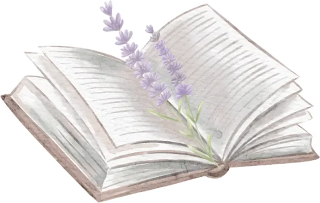

There is a book in the corner of this home.

It is one woman’s honest account of finding her way home to herself while leading at the highest levels of corporate life. A story of truth and integrity with relevance to leadership, identity, inclusion, and systems. Offered in case it might help you find your own way home.
It is a story of secrets kept and finally told. Of a life built on achievement and nearly lost to silence. Of transformation that began with terror and ended with standing ovations. Of grief that cracked everything open and wholeness that emerged from the breaking.
It is Katherine’s story. And it is, perhaps, a mirror for your own.
“I was terrified of being judged and rejected. I thought I might lose my job.”
From the pages
From the publisher
As one of Canada’s most senior and recognized corporate executives, Katherine Dudtschak had a masculine name and appearance that did not reflect her truth. She had built a life of material success, yet something essential was missing.
Katherine was born to immigrant parents who came to Canada after surviving World War II camps. Her early years were marked with post-war trauma, financial stress, and learning difficulties.
Fueled by a passion for a better life, she became a loving parent to four children and a top executive at Canada’s largest bank. But everything changed in a moment while visiting her daughter’s university dorm. A gender inclusivity poster spoke to a truth she’d buried deep inside. She saw Katherine: the woman and the essence of who she had always been.
At 50, she affirmed her gender, coming out as Katherine to the corporate world in front of 80,000 colleagues. Her courage proved that authenticity and leadership are not only compatible but essential. Katherine ignited change, inspiring a more inclusive and compassionate approach to leadership. She amplified voices from all walks of life, especially those who knew hardship, adversity, and the feelings of not belonging. She created space for human uniqueness to be seen and valued as a vital ingredient in building the kind, inclusive, and sustainable world we long for.
Sincerely, Katherine. is a story of resilience, self-love, and the profound impact of leading with authenticity, inclusivity, and purpose. She inspires each of us to foster a harmony within ourselves, and with each other and the natural world we are part of and share.